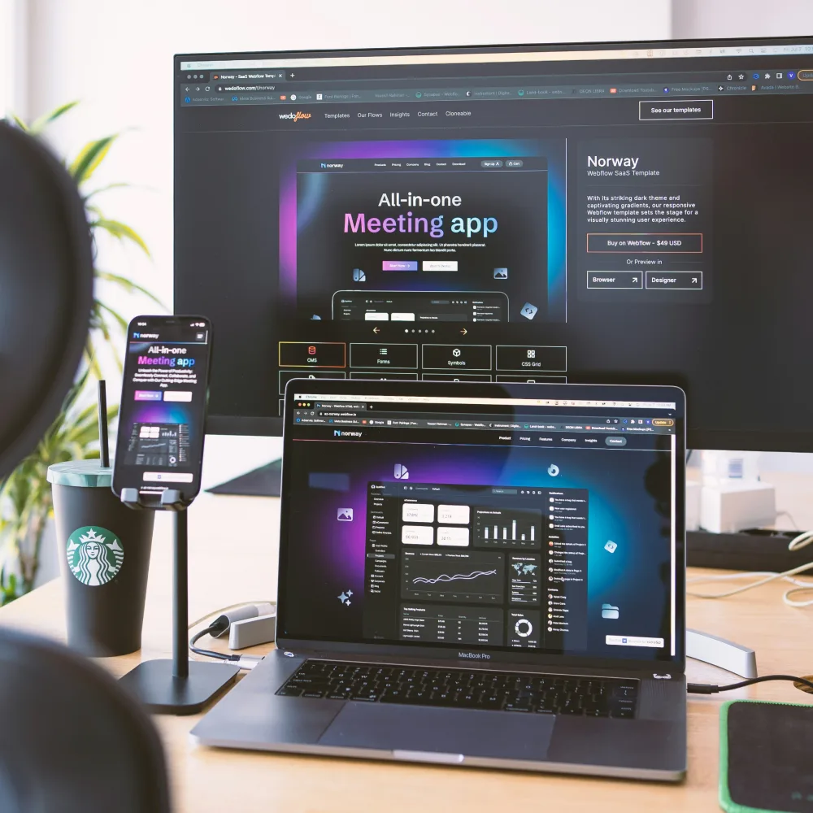

Responsive
Web Design Services
Cypherox designs responsive websites that adapt layout, content and performance across devices, so visitors get a consistent experience whether they arrive on mobile, tablet, or desktop.

When a Website Only Works on One Screen Size
Most website traffic today arrives from a mix of devices and a layout designed for desktop often breaks down on mobile, with cramped navigation, oversized images, or content that requires excessive scrolling. Visitors leave rather than fight a broken layout and search engines factor mobile usability into ranking. Responsive design solves this structurally, without maintaining a separate mobile version.
Desktop-first layouts often fail on mobile and tablet screens.
Visitors leave quickly when navigation or content is hard to use.
Poor mobile usability hurts search rankings.
Maintaining separate desktop and mobile versions doubles ongoing work.
One Codebase, Every Device
A single responsive build adapts to screen size, not two versions to maintain.
Usability First
Navigation, forms and content designed to work at any width.
Performance Aware
Layouts and assets optimized so pages load quickly on mobile connections.
Built to Scale
Supports new page types and content without breaking existing layouts.
What Our
Responsive Design Work Covers
Responsive design work covers everything from layout structure to performance, so the site holds up across devices instead of working only on desktop.
Responsive Layout Design
Builds flexible grid systems that adapt content and structure across screen sizes.
Have a Project in Mind? →Mobile First Design
Designs the mobile experience first, then scales up for tablet and desktop.
Have a Project in Mind? →Cross-Device Testing
Tests layouts across real devices and browsers to catch inconsistencies before launch.
Have a Project in Mind? →Performance Optimization
Optimizes images, assets and code so responsive pages load quickly on any connection.
Have a Project in Mind? →Accessible Design
Designs layouts and interactions usable by people relying on assistive technology.
Have a Project in Mind? →Existing Site Responsive Redesign
Rebuilds an existing desktop-only site into a fully responsive experience.
Have a Project in Mind? →Reach Every Visitor,
Regardless
of Device
A responsive website keeps visitors engaged no matter how they arrive, which directly affects conversion and retention. Bounce rates drop when mobile visitors get a usable experience, search visibility improves alongside better mobile usability and a single responsive codebase reduces the ongoing cost of maintaining separate versions.
Reduces bounce rates from visitors on mobile and tablet devices.
Supports search visibility through improved mobile usability.
Lowers ongoing maintenance costs compared with separate device-specific builds.
Keeps the experience consistent as new devices and screen sizes emerge.
Talk Through Your Responsive Design Requirements
Speak with someone who will ask about your current site, target devices and where visitors are dropping off, then outline a practical approach.
Book a CallHire Dedicated Developers
Designers and engineers deliver responsive design projects across layout, frontend development and performance, embedded in your delivery process rather than handed off as a single build.
Hardik
Senior AI and ML Engineer
Available NowBuilds production AI systems with LLM integration, agent orchestration and ML pipelines. Handles model evaluation, RAG and deployment.
Skills:
Krupa
Senior Full Stack Engineer
Available NowDelivers web and mobile applications across frontend, backend and API layers. Works with modern frameworks, databases and cloud pipelines.
Skills:
Akash
Senior Cloud and DevOps Engineer
Available NowArchitects cloud infrastructure with automated deployment, monitoring and security: container orchestration, IaC and cost optimization.
Skills:
Responsive Design Built Around Your Industry
The right responsive approach depends on your content, the devices your visitors actually use and how the site needs to perform.
Ecommerce and Retail
Retail sites need responsive design that keeps product browsing and checkout usable across every device.
- Keeps product galleries and checkout usable on mobile.
- Reduces cart abandonment caused by poor mobile layouts.
- Maintains consistent branding across device types.
Professional Services
Professional services firms need responsive sites that clearly convey credibility on any screen size.
- Keeps content and contact forms accessible on any device.
- Presents case studies and credentials clearly on mobile.
- Supports lead capture across desktop and mobile visitors.
Media and Publishing
Publishing sites need responsive layouts that keep long-form content readable across devices.
- Adapts article layout and typography for mobile reading.
- Keeps advertising and content balanced across screen sizes.
- Supports fast load times for content-heavy pages.
SaaS and Technology
SaaS marketing sites need responsive design that keeps product messaging and sign-up flows clear on any device.
- Keeps sign-up and demo flows usable on mobile.
- Presents product features clearly at every screen size.
- Supports fast performance for conversion-focused pages.
How We Design and Build
Your Responsive
Website
The process moves from understanding your content and users through design, development, testing and deployment, with support once the site is live.
The Technology Behind Your
Responsive Website
We build responsive websites with modern frontend frameworks and performance tools suited to your content and platform requirements.
What
Clients Say
Responsive Web Design
Questions Answered
These are the questions we hear most often from teams evaluating responsive web design, covering scope, performance, timelines and ongoing support.
Responsive design uses a single flexible layout that adjusts continuously to screen size, while adaptive design serves a fixed set of layouts for specific breakpoints. Responsiveness is generally more flexible for varied devices.
This depends on the current site's structure. Some sites can be adapted with targeted changes, while others need a fuller rebuild to achieve a genuinely responsive layout.
Responsive design generally supports search performance through improved mobile usability, though rankings depend on many factors beyond layout alone.
Teams test layouts across a range of real devices, screen sizes and browsers to catch inconsistencies before the site goes live.
Not when built correctly. Performance optimization, including image handling and asset loading, is part of the responsive design process, not an afterthought.
Timelines depend on the number of page types and the complexity of existing content. Simpler sites move faster than those with extensive custom layouts.
We monitor usability and performance after launch and adjust the layout based on real visitor behavior and device usage.
Let's Build a Website That
Works on Every Device
If you are evaluating a responsive design project, the next step is a conversation about your current site and where visitors are struggling. We will outline a realistic path before anything is committed.